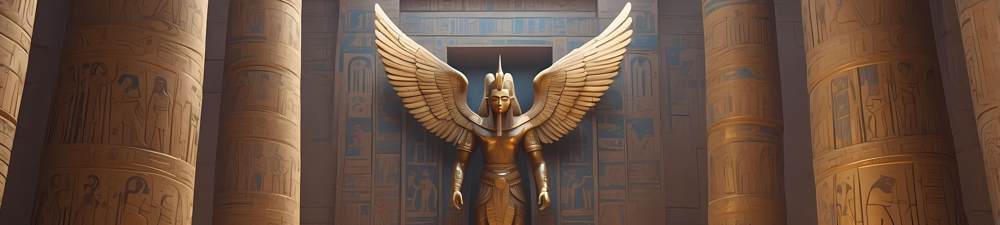
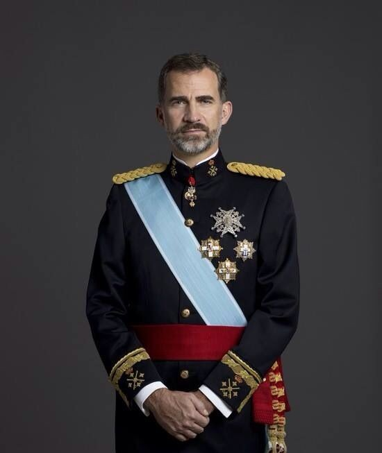
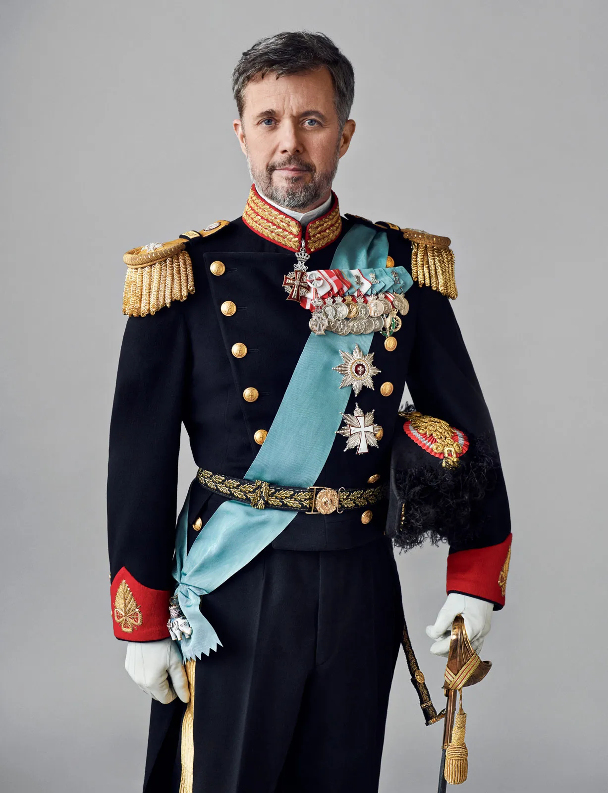
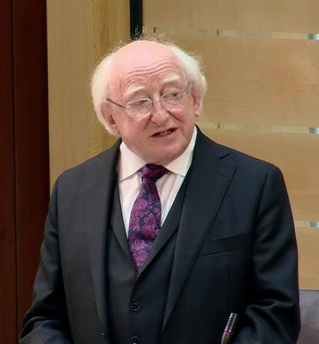

Did you hear about the new museum that's opening soon?
It’s called the Egyptian Museum, and it’s set to open on July 3, 2025 in Cairo.
People are already talking about how impressive it’s going to be—it’ll feature [modern art / ancient artifacts / science exhibits / interactive displays], and the design of the building looks amazing.
I’m definitely planning to visit once it opens. It sounds like it’s going to be a great new spot for [locals / tourists / art lovers / families].

Egypt
Egyptian TV Channels Covering the GEM Opening:
Nile TV International: As Egypt's primary English-language channel, Nile TV International is anticipated to provide live coverage and in-depth reports on the opening ceremony.
Al Masriya: This channel, known for broadcasting Egyptian content to international audiences, is likely to feature special segments on the museum's inauguration.
Al Hayat TV: A prominent Egyptian network, Al Hayat TV is expected to cover the event extensively, including interviews with officials and cultural experts.
International TV Channels Covering the GEM Opening:
BBC World News: Given the global significance of the GEM, BBC World News may provide live updates and feature stories on the museum's opening.
CNN International: CNN is known for covering major international events and is likely to report on the GEM inauguration with special segments and expert analyses.
Al Jazeera English: With its focus on Middle Eastern affairs, Al Jazeera English is expected to offer comprehensive coverage of the museum's opening ceremony.
More Than
100
Exibition Galleries
More Than
10,000
Sq. Meter Area
More Than
100,000
Masterpieces
More Than
100,000,000
Visitors since opening
More Than Just A Museum
The Presidents Who Are coming To Watch The Opening Are:
King Felipe VI and Queen Letizia of Spain
King Frederik X and Queen Mary of Denmark
President Michael Higgins of Ireland

King Felipe VI
spain

King Frederik X
Denmark

President Michael Higgins
Ireland
The opening ceremony is expected to be a grand,
multi-day event, reflecting Egypt's rich heritage and its role in global cultural history.
The GEM, poised to be the world's largest museum dedicated to a single civilization, will showcase over 100,000 artifacts,
offering a comprehensive glimpse into ancient Egyptian civilization.